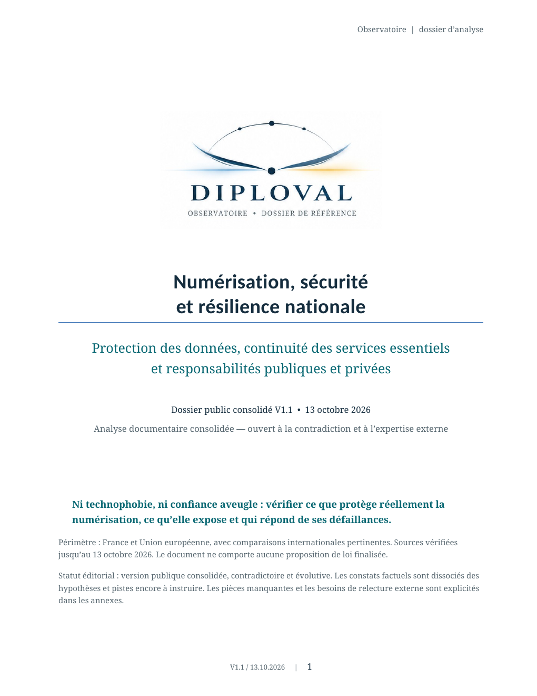

Consultation ouverte · V1.1
Numérisation, sécurité et résilience nationale
Protection des données, continuité des services essentiels et responsabilités publiques et privées. La V1.1 reste figée pendant toute la consultation.
Propositions & contributions
Tous les dossiers de Diploval n’ont pas vocation à accueillir une consultation publique. Lorsqu’un travail a été préparé dans ce sens, une version précise est publiée puis ouverte aux sources, expériences, critiques et alternatives.
Consultations ouvertes

Protection des données, continuité des services essentiels et responsabilités publiques et privées. La V1.1 reste figée pendant toute la consultation.
La contribution porte sur un document daté et identifiable, qui ne change pas silencieusement pendant la consultation.
On peut soutenir un point, le contester, apporter une source, dire que le droit actuel suffit ou proposer une autre solution.
Diploval rend ensuite compte des apports retenus, non retenus ou laissés ouverts et publie une nouvelle version si nécessaire.